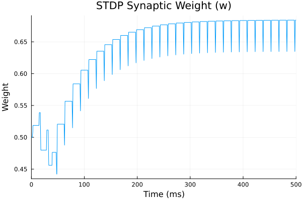

Example 6: Spike-Timing-Dependent Plasticity (STDP)
This example introduces learning and plasticity. We connect two neurons using the STDPSynapse, a continuous, smooth approximation of STDP.
We drive the presynaptic neuron with a constant current, and the postsynaptic neuron with a slightly different constant current so they spike at different frequencies. The STDP rule will continuously strengthen or weaken the synaptic weight based on their relative spike times. We will plot the dynamic weight variable w to watch learning happen in real-time!
using MTKNeuralToolkit
using MTKNeuralToolkit.HodgkinHuxley: SodiumChannel, PotassiumChannel, LeakChannel
using ModelingToolkit: mtkcompile, @named
using OrdinaryDiffEq
using Plots##. Build Two Neurons
top = Scalar()
function build_neuron(name::Symbol)
@named cap = Capacitor(topology=top, C=1.0)
@named na = SodiumChannel(topology=top)
@named k = PotassiumChannel(topology=top)
@named leak = LeakChannel(topology=top)
return build_compartment(cap, [na, k, leak]; name=name, V_init=-65.0, topology=top)
end
pre_neuron = build_neuron(:pre_neuron)
post_neuron = build_neuron(:post_neuron)Compartment{NoMorphology, NoGeometry, Float64}(Model post_neuron:
Subsystems (8): see hierarchy(post_neuron)
cap
injector
syn_injector
p
⋮
Equations (52):
36 standard: see equations(post_neuron)
16 connecting: see equations(expand_connections(post_neuron))
Unknowns (51): see unknowns(post_neuron)
cap₊v(t)
cap₊i(t)
cap₊p₊v(t)
cap₊p₊i(t)
⋮
Parameters (7): see parameters(post_neuron)
cap₊C
na₊g
na₊E_rev
k₊g
⋮, (V = post_neuron₊cap₊v(t), p_pin = Model post_neuron₊p:
Equations (2):
2 connecting: see equations(expand_connections(post_neuron₊p))
Unknowns (2): see unknowns(post_neuron₊p)
v(t)
i(t), n_pin = Model post_neuron₊n:
Equations (2):
2 connecting: see equations(expand_connections(post_neuron₊n))
Unknowns (2): see unknowns(post_neuron₊n)
v(t)
i(t), I_ext = post_neuron₊injector₊I₊u(t), I_syn = post_neuron₊syn_injector₊I₊u(t), cap_name = :cap), -65.0, Scalar(), NoGeometry(), NoMorphology())Define the STDP Synapse
The STDPSynapse continuously updates its weight w based on the traces x (pre) and y (post).
- If pre spikes before post, x is high when y spikes -> LTP (weight increases)
- If post spikes before pre, y is high when x spikes -> LTD (weight decreases)
@named stdp_syn = STDPSynapse(g_max=2.0, E_rev=0.0, V_th=0.0, slope=2.0,
τ_s=5.0, τ_plus=20.0, τ_minus=20.0,
A_plus=0.1, A_minus=0.1, w_init=0.5, w_max=1.0, w_min=0.0)
synapse_specs = [
SynapseSpec(
pre_neuron.interfaces.V,
post_neuron.interfaces.V,
post_neuron.interfaces.I_syn,
stdp_syn
)
]1-element Vector{SynapseSpec}:
SynapseSpec(pre_neuron₊cap₊v(t), post_neuron₊cap₊v(t), post_neuron₊syn_injector₊I₊u(t), Model stdp_syn:
Equations (5):
5 standard: see equations(stdp_syn)
Unknowns (7): see unknowns(stdp_syn)
s(t)
w(t)
x(t)
y(t)
⋮
Parameters (11): see parameters(stdp_syn)
g_max
τ_s
τ_plus
τ_minus
⋮, nothing)Driving Stimuli (Phase-Shifted Sine Waves)
To demonstrate BOTH potentiation and depression, we drive both neurons with the same frequency, but shift the phase. Swap the driver with a higher phase to see either LTP or LTD
using ModelingToolkitStandardLibrary.Blocks: SinePre fires ~10ms before Post (Phase offset of 1 radian)
@named pre_driver = Sine(amplitude=8.0, frequency=0.2, offset=8.0, phase=1.0)
@named post_driver = Sine(amplitude=8.0, frequency=0.2, offset=8.0, phase=0.0)
drivers = [
(1, pre_driver), # Pre fires second
(2, post_driver) # Post fires first -> causes LTD
]2-element Vector{Tuple{Int64, ModelingToolkitBase.System}}:
(1, Model pre_driver:
Subsystems (1): see hierarchy(pre_driver)
output
Equations (1):
1 standard: see equations(pre_driver)
Unknowns (1): see unknowns(pre_driver)
output₊u(t): Inner variable in RealOutput output
Parameters (5): see parameters(pre_driver)
offset
start_time
amplitude
frequency
⋮)
(2, Model post_driver:
Subsystems (1): see hierarchy(post_driver)
output
Equations (1):
1 standard: see equations(post_driver)
Unknowns (1): see unknowns(post_driver)
output₊u(t): Inner variable in RealOutput output
Parameters (5): see parameters(post_driver)
offset
start_time
amplitude
frequency
⋮)Build and Simulate
net = build_acausal_network([pre_neuron, post_neuron];
synapse_specs=synapse_specs,
drivers=drivers,
name=:stdp_net)
println("Compiling STDP network...")
sys = mtkcompile(net.sys)
prob = ODEProblem(sys, [], (0.0, 500.0), jac=true, sparse=true)
println("Solving...")
sol = solve(prob, Rosenbrock23(), reltol=1e-4, abstol=1e-4)retcode: Success
Interpolation: specialized 2nd order "free" stiffness-aware interpolation
t: 7995-element Vector{Float64}:
0.0
0.002893114846611352
0.008829242592298848
0.01896847733888128
0.034855942072418426
0.05740747299190596
0.087434087710729
0.12514630534363663
0.17053256489091745
0.22324463261734082
⋮
499.6161828496841
499.6700056976823
499.72382854568053
499.77765139367875
499.831474241677
499.8852970896752
499.9391199376734
499.99294278567163
500.0
u: 7995-element Vector{Vector{Float64}}:
[0.0, 0.0, 0.5, 0.0, 0.052, 0.596, 0.317, -65.0, 0.052, 0.596, 0.317, -65.0]
[2.2349627521889976e-17, 2.245853576014826e-17, 0.5, 2.2453672638795856e-17, 0.05201292703461028, 0.5959997882886603, 0.31700053149976487, -64.95747173816885, 0.05201219459646022, 0.5959999038565976, 0.31700045247461317, -64.97690924988831]
[6.901310457204732e-17, 7.004748951418226e-17, 0.5, 7.000154883749462e-17, 0.05204892805074109, 0.595997770330704, 0.3170027037263184, -64.8703206146502, 0.05204217738993674, 0.5959988455542649, 0.3170019688435469, -64.92940110022968]
[1.5129805871055e-16, 1.5623335009379267e-16, 0.5, 1.5601600924133225e-16, 0.05213910269008907, 0.5959893922832651, 0.31700977850526413, -64.72179313218808, 0.05210849424492114, 0.5959943458066783, 0.3170063957654718, -64.84784541345317]
[2.871122031222918e-16, 3.046738337457775e-16, 0.5, 3.0391057234871303e-16, 0.052349992106445906, 0.5959637237860609, 0.31702940298819776, -64.48987392677607, 0.05224941241660008, 0.5959804025734794, 0.3170180287718263, -64.71899951055983]
[4.954569122307232e-16, 5.468359826352734e-16, 0.5, 5.446448217383877e-16, 0.052786062704842984, 0.5959008899376282, 0.3170751743023435, -64.16230076831522, 0.05252319577387247, 0.5959459562049402, 0.31704450487680935, -64.53385391016991]
[8.044613889486188e-16, 9.365013652927842e-16, 0.5, 9.310089006760626e-16, 0.05359500101953108, 0.5957688431588444, 0.317168789011358, -63.72893333869959, 0.0530133960034179, 0.5958728563290904, 0.31709821532706123, -64.28313244160809]
[1.2517322463325767e-15, 1.560213705096528e-15, 0.5, 1.5477676444427228e-15, 0.0549433567459485, 0.5955239673362855, 0.3173393418066993, -63.188825459179014, 0.0538168285543435, 0.5957357552860524, 0.31719623188775786, -63.96125551612892]
[1.8953113880890367e-15, 2.568710884380669e-15, 0.5, 2.542480030679201e-15, 0.05700157264380797, 0.5951110514064736, 0.3176230435644306, -62.54444715422939, 0.05503788190648683, 0.5955015068798041, 0.3173606389783952, -63.56331787249344]
[2.8243610307153937e-15, 4.223807653330196e-15, 0.5, 4.1713457622318265e-15, 0.0599194777827596, 0.5944665642774342, 0.3180605179728477, -61.80289421648331, 0.056776016177501096, 0.5951303314652179, 0.317617545700887, -63.086336815251975]
⋮
[1.5189736186085252, 1.6958985001676352, 0.6840784890826908, 0.6636813372563515, 0.025794649282151125, 0.13352865236569558, 0.6848585686079179, -74.84318190774667, 0.6845365934195154, 0.06419288359502504, 0.7387481765887064, -46.42170247181388]
[1.5148913385678309, 1.6913407300276393, 0.684078489082819, 0.6565753749087314, 0.022629263178202175, 0.13871001431586577, 0.6802090480315028, -74.77648135715685, 0.6420535516948124, 0.06491075553711885, 0.7367432324862814, -48.91744534050865]
[1.5108200297563465, 1.6867952090102452, 0.6840784890828552, 0.6495454953105443, 0.020518949617924262, 0.14383370938651627, 0.6756101499221989, -74.6932366539164, 0.5953252521772688, 0.06595797898962943, 0.7344227850111781, -51.4743279476606]
[1.5067596626898425, 1.6822619041956262, 0.6840784890828652, 0.6425908838522443, 0.01913570296061986, 0.1488966524871843, 0.6710627853082327, -74.59915259371658, 0.544545881854167, 0.06734656645326768, 0.7317925420557432, -54.06065241650421]
[1.5027102079624566, 1.677740782752428, 0.684078489082868, 0.6357107346462193, 0.018253529444389446, 0.15389711847287774, 0.6665673992672829, -74.49788056492146, 0.49033161502725686, 0.0690882616377398, 0.7288642315815405, -56.62030068286512]
[1.4986716362470995, 1.6732318119375316, 0.6840784890828687, 0.6289042504334065, 0.017717144597412297, 0.1588342534212001, 0.6621241367305422, -74.39182425953895, 0.43385247027064766, 0.07119060459042546, 0.7256577842367586, -59.07336673698253]
[1.4946439182954279, 1.6687349590958158, 0.684078489082869, 0.6221706424909071, 0.017419930298213135, 0.1637077763763247, 0.6577329434009384, -74.2826267210835, 0.37685756180150887, 0.07365135588997174, 0.7222024551990379, -61.325904874476784]
[1.4906270249376843, 1.6642501916599213, 0.6840784890828691, 0.6155091305405911, 0.01728863006769731, 0.16851779632525354, 0.6533936274228829, -74.1714651899382, 0.3215008160293049, 0.07645286356017564, 0.7185361077892682, -63.28927527361712]
[1.4901011340036865, 1.663663046738317, 0.6840784890828691, 0.6146409873109907, 0.017281067140864675, 0.16914379236522828, 0.6528284940949416, -74.15679034788597, 0.3144856603993208, 0.07684419393461812, 0.7180418043035744, -63.520175678635646]Plot the Results
p1 = plot(sol, idxs=[sys.pre_neuron.cap.v, sys.post_neuron.cap.v],
title="Neuron Voltages", ylabel="V (mV)",
labels=["Pre" "Post"], legend=:right)
Plot the plastic weight variable! We reach into the synapse namespace to get w.
p2 = plot(sol, idxs=[sys.stdp_syn.w],
title="STDP Synaptic Weight (w)",
ylabel="Weight", xlabel="Time (ms)", legend=false)
Plot the pre and post synaptic traces (x and y) which drive the weight update
p3 = plot(sol, idxs=[sys.stdp_syn.x, sys.stdp_syn.y],
title="STDP Activity Traces",
labels=["x (Pre)" "y (Post)"], legend=:right)
plot(p1, p2, p3, layout=(3,1), size=(800, 800))
This page was generated using Literate.jl.